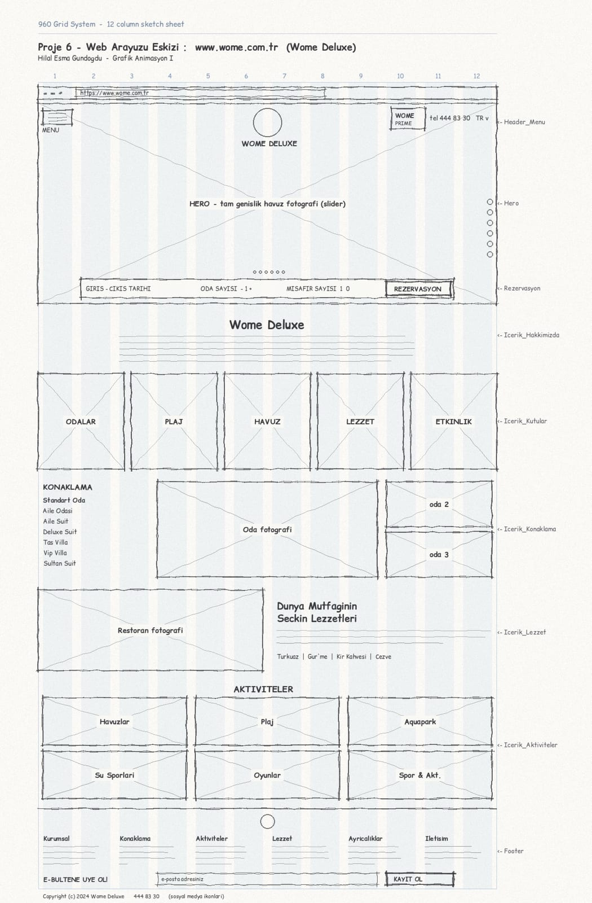
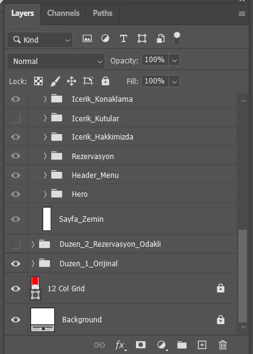
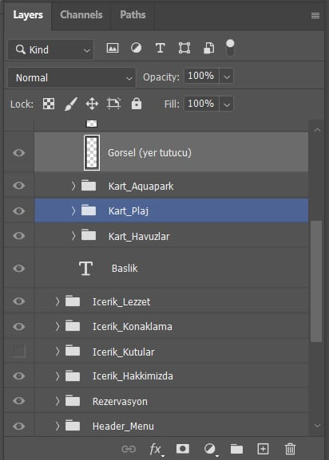
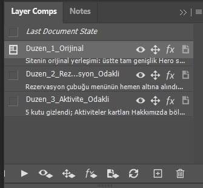
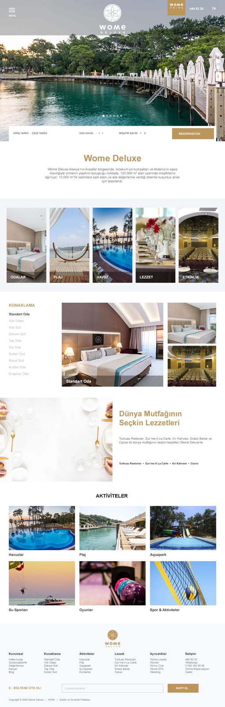
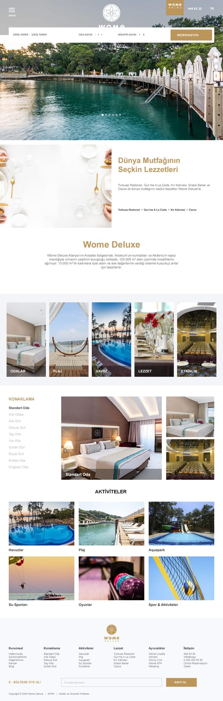
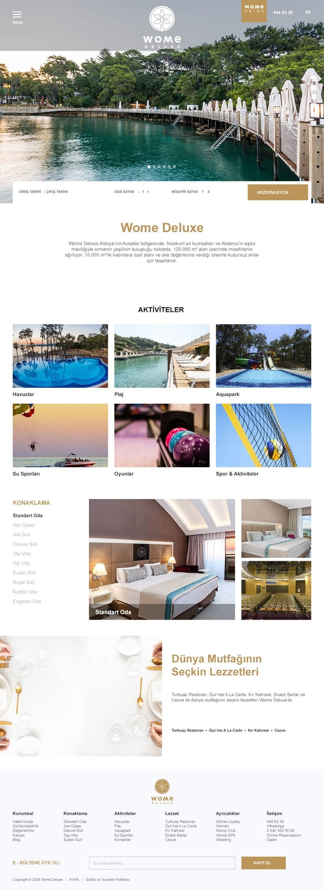

01Web Tasarım & UIWeb Design & UI
Adobe Photoshop'ta Layer Comps ve 960 Grid Sistemiyle Web Arayüzü Tasarlamak Designing a Web Interface in Adobe Photoshop with Layer Comps and the 960 Grid System
Grafik Animasyon I dersindeki altıncı projemde Wome Deluxe'ün ana sayfasını 960 grid sistemi üzerinde yeniden tasarladım ve tek bir PSD dosyasında üç farklı sayfa düzeni hazırladım. Bu yazıda izlediğim adımları anlatıyorum. In the sixth project of my Graphic Animation I course, I redesigned the Wome Deluxe home page on the 960 grid system and prepared three different page layouts in a single PSD file. In this post I walk through the steps I followed.
1. Önce eskiz: ne nereye gelecek?
Photoshop'u açmadan önce ana sayfayı kaba bir tel kafes eskizle planladım. Hangi bölümlerin olacağını ve hangi sırayla dizileceğini önceden belirlemek, tasarıma geçtiğimde "ne çizeceğim?" yerine "bunu nasıl hizalarım?" sorusuna odaklanmamı sağladı.

2. 960 grid: hizalamanın görünmez iskeleti
960 grid, 960 piksel genişliğinde, eşit sütunlara ve aralarındaki sabit boşluklara bölünmüş bir yerleşim sistemidir. Ben 12 sütunlu şablonu kullandım: her sütun 60 px, aralıklar 20 px. Logo, menü, görseller ve metin bloklarını bu sütunların kenarlarına oturttuğumda sayfa kendiliğinden düzenli görünmeye başladı.
- Hizalama: başlıklar ve kartlar aynı dikey çizgilerden başlıyor; göz sayfada rahatça ilerliyor.
- Ritim: sütun aralıkları her yerde aynı olduğu için boşluklar tekrar eden, sakin bir düzen oluşturuyor.
- Karar hızı: bir öğenin genişliğini "kaç sütun?" diye düşünmek, rastgele piksel denemekten çok daha hızlı.

3. Katman gruplama disiplini
Bir ana sayfa tasarımı kısa sürede onlarca katmana ulaşıyor. Kaybolmamak için her bölümü kendi grubunda topladım ve grupları sayfadaki sıralarıyla aynı düzende tuttum. Böylece bir kartı ya da bir alanı taşımak istediğimde tek tek katman aramak yerine ilgili grubu seçmem yetti.


4. Layer Comps: tek PSD'de üç düzen
Layer Comps (Katman Kompozisyonları), katmanların o anki görünürlüğünü, konumunu ve görünüm (katman stili) ayarlarını bir "anlık durum" olarak kaydeder. Window › Layer Comps panelinden yeni bir comp oluşturup aralarında tek tıkla geçiş yapılabilir.
Ben bu panelde üç düzen hazırladım: özgün yerleşim, rezervasyon odaklı düzen ve aktivite odaklı düzen. Üç ayrı dosya yerine tek PSD'de çalışmanın en büyük kazancı şuydu: ortak bir öğede yaptığım düzeltme üç düzene birden yansıdı.




5. Aklımda kalanlar
Izgara, tasarımın "neden düzenli göründüğü" sorusuna somut bir cevap veriyor; Layer Comps ise aynı tasarımın farklı fikirlerini dosya kalabalığı olmadan denemeyi sağlıyor. İkisini birlikte kullanmak, düzen değiştirirken bile hizalamanın bozulmamasını sağladı.
1. Sketch first: what goes where?
Before opening Photoshop, I planned the home page with a rough wireframe sketch. Deciding which sections the page needs and in what order meant that, once I started designing, I could focus on "how do I align this?" instead of "what do I draw?".
2. The 960 grid: the invisible skeleton of alignment
The 960 grid is a layout system 960 pixels wide, divided into equal columns with fixed gutters between them. I used the 12-column template: 60 px columns with 20 px gutters. Once I snapped the logo, menu, images and text blocks to the edges of those columns, the page started to look orderly on its own.
- Alignment: headings and cards start from the same vertical lines, so the eye moves through the page easily.
- Rhythm: because the gutters are the same everywhere, the spacing forms a calm, repeating pattern.
- Faster decisions: thinking "how many columns?" for an element's width is much quicker than trying random pixel values.
3. The discipline of grouping layers
A home page design reaches dozens of layers very quickly. To avoid getting lost, I gathered each section into its own group and kept the groups in the same order as on the page. That way, when I wanted to move a card or an area, selecting its group was enough instead of hunting for individual layers.
4. Layer Comps: three layouts in one PSD
Layer Comps save the current visibility, position and appearance (layer style) settings of layers as a "snapshot". From the Window › Layer Comps panel you can create a new comp and switch between comps with a single click.
I prepared three layouts in this panel: the original arrangement, a reservation-focused layout and an activity-focused layout. The biggest gain of working in one PSD instead of three separate files was this: a fix I made to a shared element showed up in all three layouts at once.
5. What stayed with me
The grid gives a concrete answer to "why does this design look orderly?", while Layer Comps let me try different ideas for the same design without a pile of files. Using them together kept the alignment intact even while switching layouts.